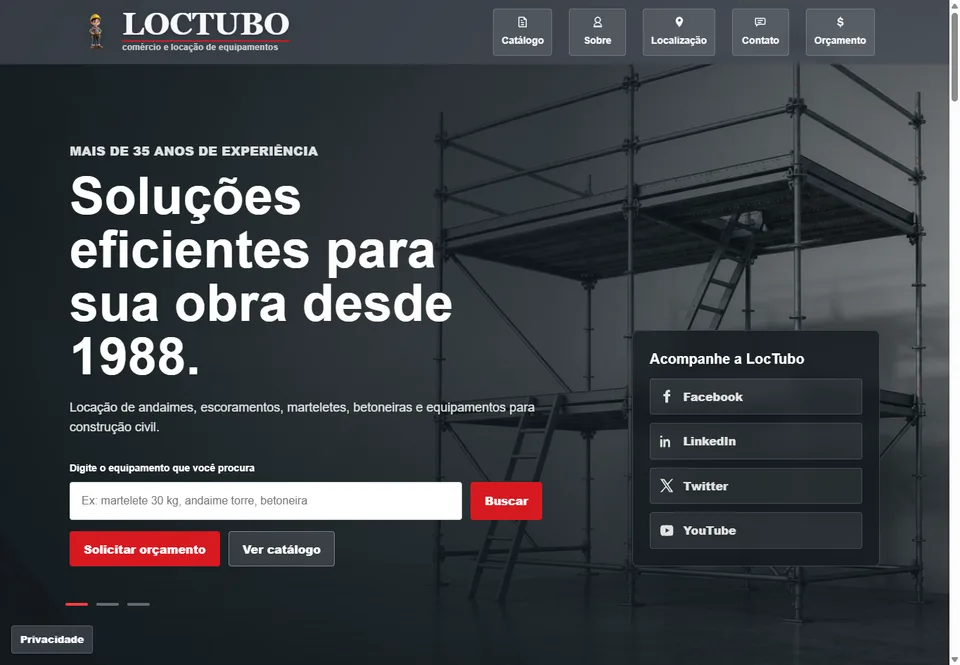
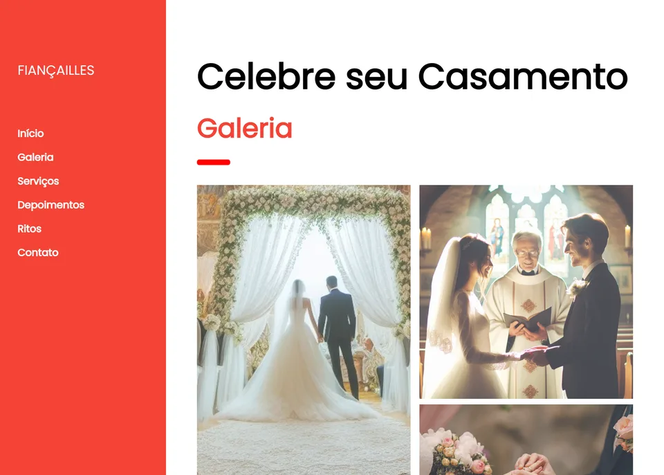

Loctubo
Site institucional e catálogo digital de locação, com busca, filtros, orçamento pelo WhatsApp, campanhas e SEO local. Desenvolvido com HTML5, CSS3 e JavaScript.
Visitar LoctuboSeu negócio na capital, presente na web
Sou Leonardo Dalmazzo e desenvolvo sites para empresas e profissionais de São Paulo apresentarem seus serviços e receberem pedidos de orçamento. Site responsivo, identidade visual e contato facilitado, com o projeto combinado à distância.
Uma pessoa que encontra sua empresa por indicação ou pesquisa precisa entender o que você faz antes de entrar em contato. O site reúne serviços, trabalhos e informações comerciais em um endereço próprio.
O formato depende da sua necessidade: apresentar o negócio, divulgar uma oferta ou organizar produtos para consulta.
Apresente a empresa, sua atuação, os serviços e o portfólio. Uma base para quem deseja conhecer seu trabalho antes de contratar. Veja a criação de site institucional para empresas.
Concentre uma oferta e um próximo passo, como pedir um orçamento. Esse formato pode apoiar campanhas com público em São Paulo. Conheça as landing pages para serviços e anúncios.
Organize produtos ou equipamentos com imagens, categorias e informações úteis ao atendimento. Busca, filtros e pedidos pelo WhatsApp são avaliados conforme o escopo.
Layout responsivo, leitura clara e botões acessíveis para quem consulta seus serviços pelo celular. Formulários e canais de contato acompanham a rotina do negócio.
Quem procura um serviço em São Paulo precisa saber se a oferta atende à sua necessidade e se a empresa atende sua região. O conteúdo deve responder a essas dúvidas com dados reais do negócio.
O planejamento considera serviços, público e formas de atendimento. A proposta define o trabalho de SEO; posições no Google não são garantidas.
Serviços descritos com clareza, dúvidas frequentes e regiões de atendimento confirmadas por você. Cada página precisa ter uma finalidade e informações próprias.
HTML semântico, títulos e descrições por página, canonical, links internos e cuidado com o carregamento ajudam a apresentar o conteúdo aos buscadores.
As informações do site devem corresponder aos canais que a empresa utiliza. Endereço e horários entram no conteúdo somente quando existem e foram confirmados.
Perfil da Empresa no Google, Search Console, Analytics e campanhas podem ser avaliados separadamente. Conheça os serviços de Google e divulgação.
A criação do site pode ser combinada à distância: começamos pela conversa sobre seu negócio e organizamos materiais, escopo e revisões pelos canais acordados.
Você pode falar comigo pelo WhatsApp ou utilizar as outras formas de contato já disponíveis no site.
Conte o que sua empresa faz, quem atende e quais serviços ou produtos deseja apresentar. Se já tem um site, envie o endereço e explique o que precisa melhorar.
Páginas, recursos, conteúdo, prazo, valor e responsabilidades. Domínio, hospedagem e manutenção são discriminados conforme a contratação.
A Loctubo reúne site institucional e catálogo digital, com recursos de contato e SEO local descritos no portfólio. Fiançailles mostra outra organização de serviços, galeria e contato.

Site institucional e catálogo digital de locação, com busca, filtros, orçamento pelo WhatsApp, campanhas e SEO local. Desenvolvido com HTML5, CSS3 e JavaScript.
Visitar Loctubo
Site institucional para celebrações de casamento, com apresentação de serviços, ritos, galeria e contato.
Visitar FiançaillesConversamos sobre o que você oferece, como atende seus clientes em São Paulo e o objetivo do site.
Definimos o formato, as páginas, os recursos de contato e os materiais necessários. Prazo e orçamento são combinados antes de começar.
Construção com a identidade da marca e revisão de textos, links, recursos contratados e navegação em diferentes telas.
Após a aprovação, publicação no ambiente definido. Configurações de domínio, hospedagem, ferramentas e manutenção seguem a proposta.
O valor depende das páginas, dos materiais disponíveis, dos recursos e das integrações. Conte o que precisa apresentar e como recebe seus clientes para que eu possa avaliar o escopo e preparar uma proposta.
O projeto de site pode ser combinado à distância. A conversa inicial, o envio de materiais e as revisões podem acontecer pelos canais acordados, conforme já previsto para sites e sistemas na página de serviços.
Sim. O planejamento pode considerar seus serviços e as regiões onde sua empresa realmente atua, com conteúdo útil, metadados e contatos consistentes. O escopo de SEO e o acompanhamento são definidos na proposta, sem garantia de posição nas buscas.
O site institucional apresenta o negócio de forma mais ampla. A landing page concentra uma oferta e uma ação, sendo útil para campanhas específicas. Podemos avaliar o formato a partir do que seu público precisa saber.
Sim. O desenvolvimento considera layout responsivo e navegação em telas pequenas. Botões de WhatsApp e formulários podem compor o projeto conforme o escopo contratado.
Sim, conforme as configurações e os acessos disponíveis. Se precisar de apoio com publicação ou mudança de hospedagem, consulte os serviços de domínio e cuidados com o site. Custos recorrentes são apresentados separadamente.
O prazo é definido após avaliar conteúdo, número de páginas, funcionalidades e etapas de aprovação. Textos, imagens e informações comerciais disponíveis ajudam a planejar o cronograma.
Envie uma descrição dos seus serviços, o público que atende e o que deseja mostrar no site. Se já possui domínio, imagens ou uma página publicada, inclua essas informações na conversa.
Conheça os detalhes da criação de sites profissionais, compare sites institucionais e landing pages ou consulte todos os serviços.